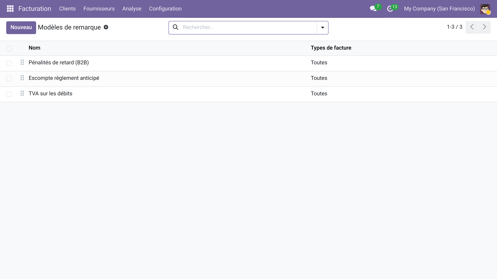
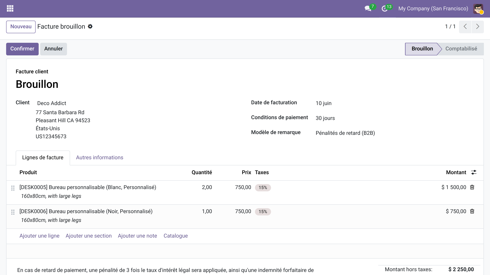
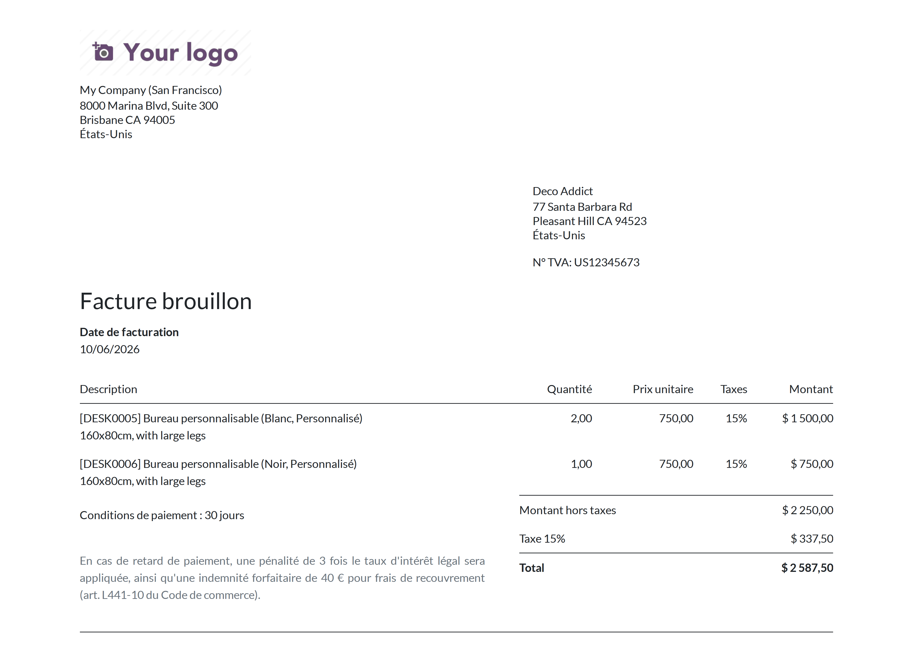

Modèles de remarque sur factures
Fini les copier-coller manuels : insérez vos mentions récurrentes en un clic, imprimées directement dans le PDF de la facture.
Pénalités de retard, escompte pour paiement anticipé, mentions légales TVA, consignes de livraison… Les mêmes remarques reviennent sur toutes vos factures, et chaque comptable les retape à sa manière. Résultat : des libellés incohérents, des mentions parfois oubliées, et du temps perdu à chaque saisie. Un texte mal formulé sur une facture envoyée, c'est une relance ou un litige en plus à gérer.
Ce que ça apporte
- 📋 Bibliothèque de modèles validés — rédigez chaque mention une seule fois (HTML riche : gras, listes, mise en forme), gérez-les depuis Comptabilité → Configuration → Modèles de remarque.
- 🎯 Ciblage par type de facture — chaque modèle peut être limité aux factures clients, aux factures fournisseurs, ou ouvert aux deux : le bon texte au bon endroit.
- ⚡ Insertion automatique en un clic — un champ déroulant sur la facture suffit ; la remarque se copie instantanément dans la note (narration), modifiable au cas par cas si besoin.
- 📄 Impression native dans le PDF — la narration Odoo est déjà imprimée en pied de facture ; aucune personnalisation de rapport QWeb n'est requise.
- 🗂️ Archivage sans suppression — désactivez les modèles saisonniers pour les masquer sans perdre leur contenu ; réactivez-les d'une case à cocher.
En images
1. Constituer la bibliothèque de remarques
Créez et ordonnez vos modèles types — pénalités de retard, escompte, mentions légales — depuis le menu de configuration dédié.

2. Sélectionner le modèle sur la facture
Un champ déroulant apparaît directement sur le formulaire de facture ; choisir un modèle copie immédiatement le texte dans la note.

3. La remarque imprimée dans le PDF
La narration s'affiche en pied de facture dans le PDF généré par Odoo — sans aucune modification du rapport QWeb.

Pourquoi l'adopter
- Cohérence garantie : toute l'équipe utilise les mêmes libellés validés — fini les variantes de formulation d'un comptable à l'autre.
- Zéro développement : fonctionne avec le PDF natif Odoo, sans toucher aux rapports QWeb ni aux vues de mise en page.
- Déploiement immédiat : installez, créez vos premiers modèles en 5 minutes, et l'équipe compta gagne du temps dès la première facture.
- Module libre (LGPL-3) : code source ouvert, utilisable sans restriction sur votre instance Community ou Enterprise.
Licence LGPL-3 — compatible Odoo 19.0. Support : support@odooskills.com.